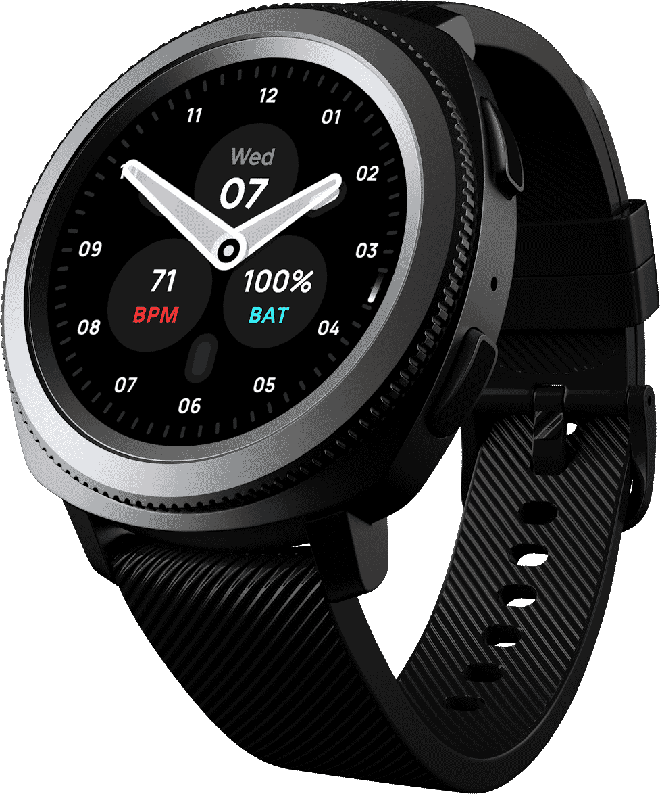

Readable at a glance
High-contrast dials tested outdoors. Time, heart rate, and battery stay legible mid-run in direct sunlight, with no squinting and no backlight hunting.
All-day battery. Readable in direct sunlight. Install on your watch in seconds through Facer.

Five signature faces, each with its own character, from clean minimalism to full sports instrumentation. Install any of them on your watch in seconds through Facer.
The third-party watch face market is full of designs that look good or work well, but rarely both. Olympus was founded to close that gap. Every face is built on tested usability methodology: sharp on the wrist, all-day battery, and legible mid-run in direct sunlight.
High-contrast dials tested outdoors. Time, heart rate, and battery stay legible mid-run in direct sunlight, with no squinting and no backlight hunting.
On AMOLED screens, black pixels draw no power. Every Olympus face maximises black space, so your watch lasts from morning run to midnight.
Works on more than 20 circular-display smartwatches through Facer. Install once and wear the same face across Galaxy, Pixel, and more.
See your faces on a watch, not a flat artboard. Apply your designs to 10+ 3D mockups in Photoshop and Sketch, and build faces faster with a ready-to-use library of complications.
Buy the Creator’s Toolkit
Drop your design onto 10+ 3D watch mockups and export presentation-ready renders for portfolios, listings, and client reviews.

A built-in library of battery, heart rate, weather, and date elements: scalable components for wireframing and laying out faces fast.


Smart-object mockups in Photoshop; vector components and circular layout tools in Sketch. Open, edit, and export. No conversion steps.